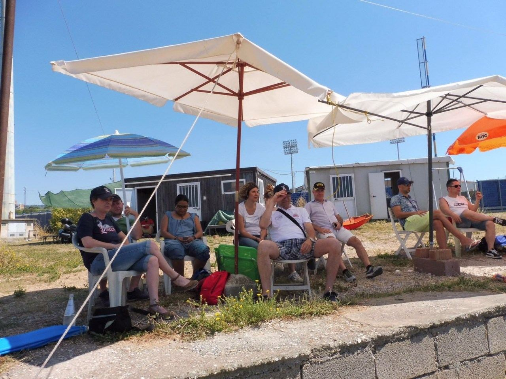
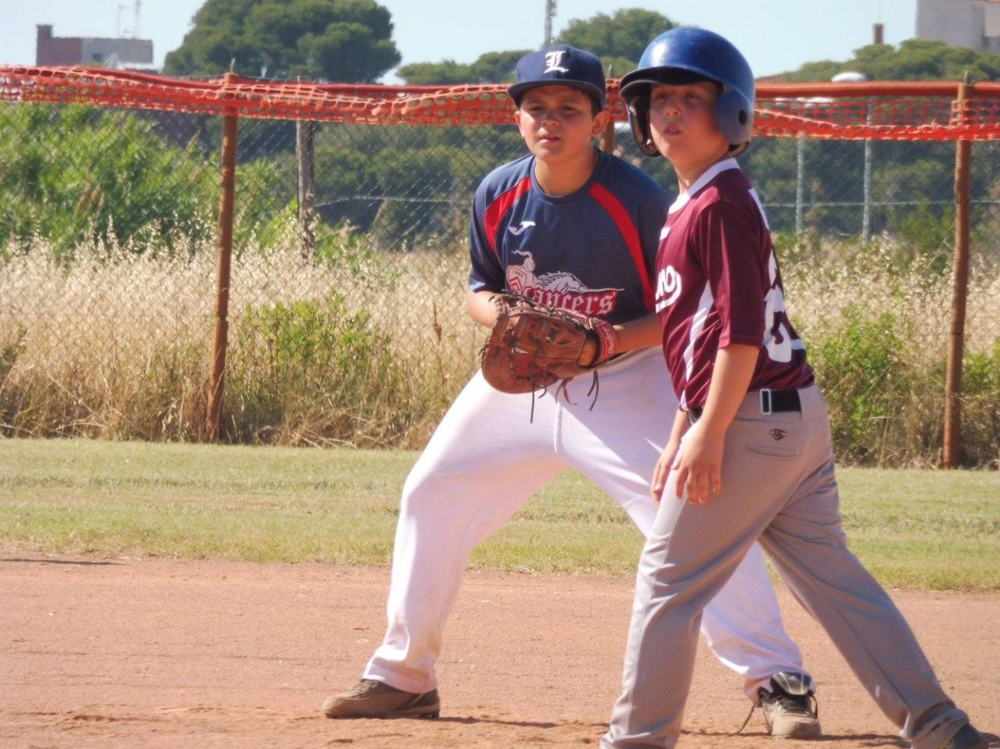

Gara che, nel vero senso della parola, dura appena due inning. I lancerini sono oggi apparsi in netta ripresa rispetto alla gara di Grosseto, concentrati e cinici nonostante il caldo pomeriggio in cui si è giocato. Negli inning successivi si è trattato solo di incrementare il vantaggio contenendo gli sterili attacchi dei locali i cui punti sono stati concessi solo nel finale.
Questi i protagonisti della gara: Lorenzo Gianrossi, Alberto Lopez, Paolo Manetti, Silvia Onori, Gabriele Paoli, Alessio Pellegrini, Lorenzo Sarubbi, Lorenzo Scarpulla, Alfredo Signorini, Noemi Vecchi. 
Primo inning 0-4. I punti portano la firma, nell’ordine, di Lopez, Pellegrini, Paoli e Scarpulla: il primo e il terzo battono mentre gli altri due sono stati promossi in prima base per 4 balls. Tutti tornano al punto di partenza rubando le varie basi. Lanciatore Lopez, ricevitore Scarpulla. Due eliminati sono opera di Lopez per strike-out, un altro riesce a battere ma Pellegrini è lesto a raccogliere e passare a Manetti in prima.
Secondo inning 0-4. Onori, promossa in prima base perché colpita dalla pallina, è poi lesta a rubare base dopo base e completare il giro del diamante. Dopo di lei Pellegrini va in prima base per base-ball, mentre Paoli perché riesce a battere validamente. È il turno di Scarpulla a cui, come già successo a Massa, l’aria di mare gli ispira evidentemente delle gran battute tanto da consentirgli di tornare a casa base. Ovviamente, prima di lui, ci passano anche Pellegrini e Paoli che si trovavano rispettivamente in seconda e prima base. Lanciatore Lopez, ricevitore Scarpulla. Il n° 6 è eliminato per strike-out, il 14 riesce a battere ma Signorini è raccoglie e passa a Manetti in prima che lo elimina. Il terzo out è merito di Paoli che prende al volo la battuta del n° 10.
Terzo inning 0-0. Solo Signorini batte ma non arriva in prima base. Lanciatore Lopez, ricevitore Scarpulla. Il n° 77, che aveva raggiunto la prima base per base-ball, prova a rubare la seconda base ma Paoli lo elimina su passaggio di Scarpulla. L’opera è completata da Lopez che elimina due battitori.
Quinto inning 2-4. Raggiungono la prima base tutti per 4 balls, nell’ordine: Manetti, Signorini, Sarubbi, Gianrossi e Lopez a cui si aggiungono Pellegrini e Lopez che invece battono validamente. Di questi vanno a punto Manetti, Signorini, Sarubbi e Gianrossi. Lanciatori Paoli e Scarpulla, ricevitore Pellegrini. Il n° 14 batte una palla nei pressi della recinzione e fa tre basi, poi ruba il primo punto dei livornesi. Il n° 10 va in prima base perché colpita dalla pallina mentre il n° 77 è il primo eliminato per strike-out. Il cambio del lanciatore offre una situazione nuova per dei neofiti, con il n° 4 promosso in prima base dopo aver colpito la palla mandandola oltre le linee perimetrali. Ci spiegano che con la mazza ha toccato il guantone del ricevitore, che quindi ha fatto interferenza. Diamo per buono e un attimo dopo il n° 10 ruba il secondo punto. Scarpulla concede poi due strike-out consecutivi.
Sesto inning 3-4. Scarpulla batte e la palla passa un palmo sopra la testa del lanciatore, prova a fare due basi e rischia l’eliminazione ma poi è fortunatissimo perchè un pasticcio della difesa fra prima e seconda base gli fa addirittura completare il giro del diamante. La gran battuta di Vecchi consente a Manetti e Signorini, il primo promosso in prima base per 4 balls e il secondo che riesce a battere, di realizzare il secondo punto personale per entrambi. Poi è Vecchi stessa a giovarsi della battuta ai limiti del campo di Pellegrini per realizzare un altro punto. In realtà dopo di lei transitano da casa base anche Lopez, che era stato promosso in prima base per 4 balls, e lo stesso Pellegrini. Lanciatore Scarpulla, ricevitore Pellegrini. I numeri 29 e 14 passano in prima per base-ball. Fra i due si assiste all’eminazione del n° 6 la cui battuta è presa al volo da Signorini. Il n° 77 riesce a battere ma la palla si dirige in prima base dove per Paoli è semplice eliminarlo. Nel frangente il n° 10 realizza il quinto punto dei livornesi. Il terzo eliminato è opera del duo Signorini-Paoli, il primo raccoglie la palla e la passa al compagno in prima.
Prossimo incontro il 14 giugno per il recupero della partita non disputata lo scorso aprile, sul campo di Porto di Mezzo.